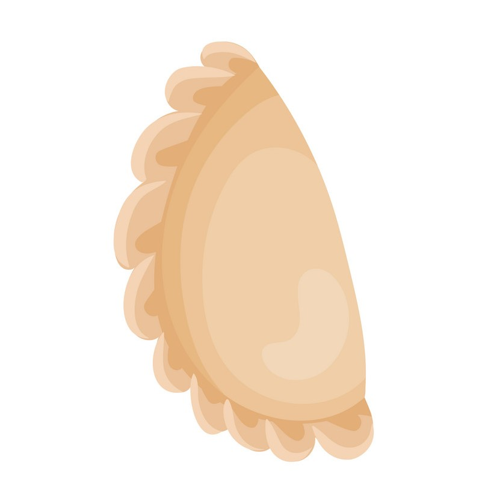

Welcome to my virtual pierogi cookbook!
My name is Abigail Koet. I am currently a graduate student at the University of Michigan, studying Information and Library Science with a focus on managing and sustaining collections in libraries and archives. This semester I had a class dedicated to the orgnization of information resources and each student chose a resource set to organize. My resource set was pierogi recipes. I am also in a class on accessible web design, so I decided to combine the skills I've learned from both classes into this website. I hope anyone who accesses my page can easily find a pierogi recipe to make at home!
A Fun Fact About Pierogi!
Some believe the pierogi came from China and through Italy via Marco Polo's expeditions. Another popular origin story involves Saint Hyacinth (patron saint of pierogi). According to this story, Saint Hyacinth brought the pierogi to Poland from Kievian Rus, now Ukraine.